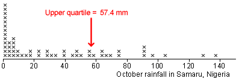

Bootstrap simulation
The simulations can be based on random samples from any approximation to the population distribution. If a normal approximation does not seem reasonable, the actual data can be used as an approximate 'population' and random samples selected with replacement from it. Such samples are called bootstrap samples.
A simulation with these bootstrap samples can again show the error distribution and provide approximate values for the bias and standard error.
Example
The October rainfall data below is highly skew, so a normal approximation should not be used to generate simulated samples.

A typical bootstrap sample is shown below:
The diagram below shows the 'errors' from 100 of these simulated bootstrap samples — the differences between the sample upper quartiles and that from the 'population' underlying the simulation, 57.4.

Using the 70-95-100 rule-of-thumb, our point estimate of the upper quartile, 57.4, is unlikely to be in error by more than about 20.